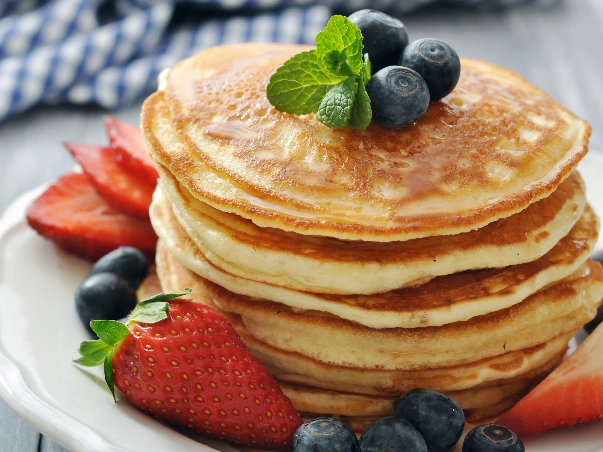

Pancakes

Pancakes are easy and dilicious to make. Try this recipe if you are in need of a quick breakfast!
For this recipe you will need just some basic kitchen utensils and a few common ingredients. Read on to see for yourself.
Ingredients
- 500 grams of flour
- 100ml of milk
- 1 egg
- some butter for baking
Steps
- Put the flour in a bowl
- Add the egg and milk
- Stir from the center of the bowl to the outside of the bowl until your batter is homonegized.
- Use just enough butter in a bakingpan to coat it entirely.
- Pour in the batter and leave it undesturped till the top is cooked.
- Flip the pancake on the other side and bake until goldenbrown.
- Enjoy!